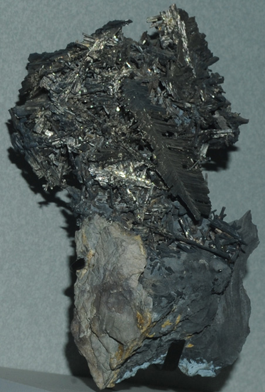

|

| Ag3Sb
This sample of dyscrasite is displayed in the Smithsonian Museum of Natural History. Dyscrasite is a compound of silver and antimony with the composition Ag3Sb . This sample is about 8x16 cm and is from Pribram, Cechy, Czech Republic . This sample also contains stibarsen.
|